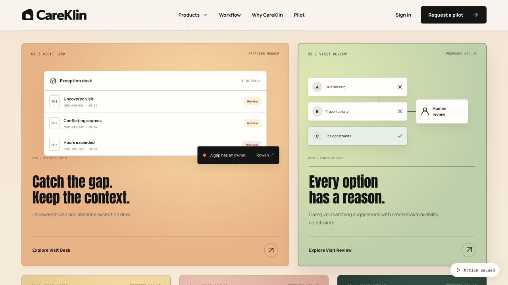
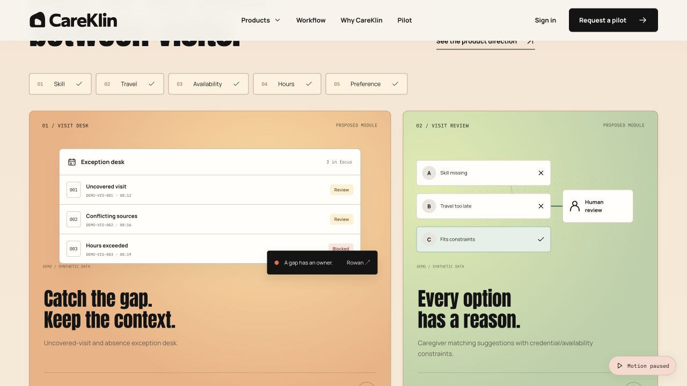
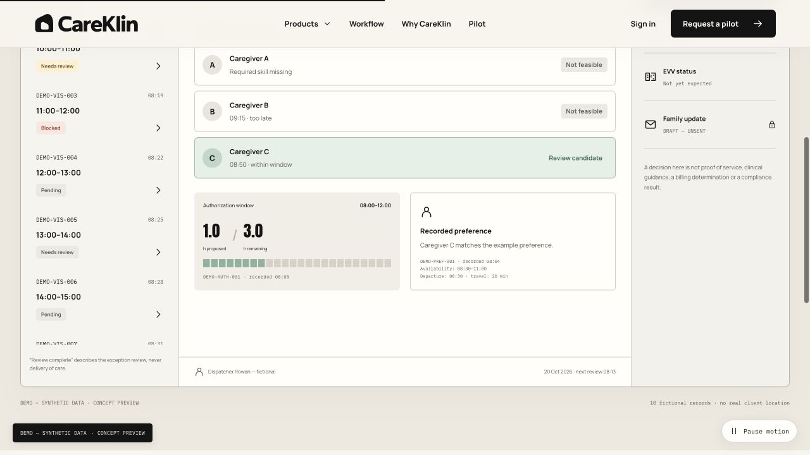
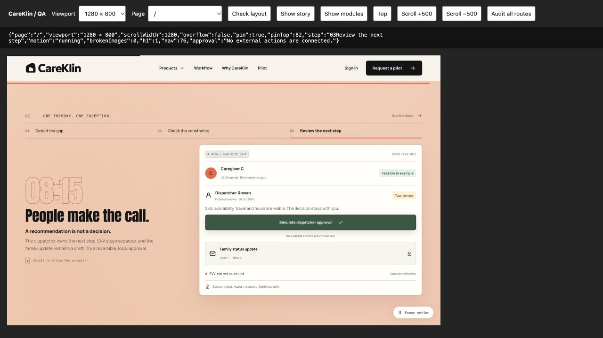
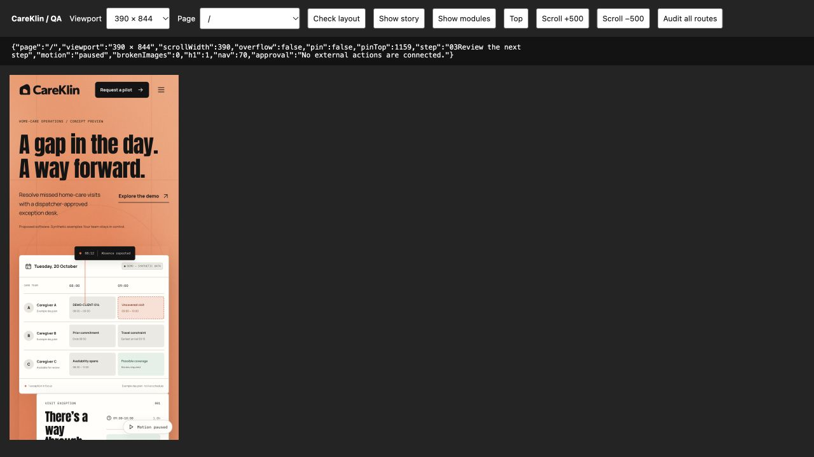

Concept site, not an operating product. No live EVV/EHR integrations, patient data, outbound messages, payment or live accounts. The inquiry form validates entries and produces a downloadable local draft; a receiving endpoint is not connected.
Motion & colour update.
The supplied Meridian Mist component now runs in warm persimmon/apricot and forest palettes across the hero, ecosystem and CTA. All card tilts are removed. Coloured product canvases, drawn travel paths, independently animated chips, scroll-scrubbed UI compositions and two-part shutter button hovers enrich the original direction.
Desktop pinning now starts at 961px wide and 700px tall. The shader renders at up to 30 fps, caps device pixel ratio at 1.25, starts near the viewport, pauses offscreen/hidden, and respects the global pause and OS reduced-motion preference. Essential copy remains available without hover.
The revised build passed all 88 responsive checks. Manual approval and undo, unsent notifications, pinned progression and pause cleanup were rechecked. Motion checks.

What is built.
The visitor experience
- Orange editorial opening with the approved vector identity and a layered, animated timetable.
- A desktop story pinned through Detect → Check → Review. Mobile and short viewports use explicit step controls.
- Five preserved offers, each with a distinct product animation and a dedicated detail page.
- Workflow, use cases, ecosystem, evaluation, pilot/pricing, governance, company, contact, sign-in and legal pages.
- Responsive navigation, product menu, hover states, page entrances, FAQ and branded not-found experience.
The engineering
- React, Vite, React Router and GSAP ScrollTrigger, with native scrolling.
- SVG/CSS flows, moving nodes, orbit details, staged dashboard sequences and scroll reveals.
- Motion pause, OS reduced-motion support, offscreen and hidden-tab animation pausing.
- Ten fictional queue records; complete detail for feasible, ambiguous and blocked cases.
- Explicit reversible approval, source evidence, decision log, separate EVV state and permanently unsent drafts.
- Local fonts, original icon library, per-route metadata, static route entries and noindex policy.
Verification.
| Check | Result |
|---|---|
| Build & model tests | Production build passed. All three tests passed: candidate constraints, explicit approval boundaries, ten unique records with unsent notifications. |
| Responsive audit | 88 page/viewport combinations at 1440×900, 768×1024, 390×844 and 320×740. No page-level horizontal overflow or broken images; one H1 per page. Raw audit. |
| Story & motion | Desktop panel remains at 82px while steps change with scrolling. Scrolling does not approve a case. Pause removes pinning and retains a readable manual story. |
| Interactions | Mobile navigation and product links, manual approval/undo, blocked abstention, decision log, required inquiry fields and local-draft feedback checked in browser. |
| Production check | Representative compiled-browser flow reported no runtime errors or warnings. Static assets and all used icon names resolve. The final watermark addition also passed a targeted 320px layout check. |
| Publication | Native deployment returned succeeded for the exact pushed source commit. Deployment record. The updated mist canvas and constraint ribbon were also verified in the signed-in hosted browser, with no runtime warnings or errors. No access controls were changed. |
| Limits | No formal screen-reader certification, device-lab testing, performance load testing or live integration validation. OS reduced-motion handling is implemented; the manual pause fallback was exercised. Full page content requires JavaScript. |
Browser captures.




Before an operating launch.
Connect an approved inquiry endpoint and operator contact/deletion path if real lead collection is wanted. Public sharing, a custom domain, analytics and authentication remain separate launch decisions.
The product gate remains eight interviews in one state, two replay permissions, a confirmed EVV route and one paid branch-pilot commitment, plus signed data/security and human-oversight approvals. State rules, vendor permissions and workforce policy still need named owners. The price remains explicitly hypothetical.